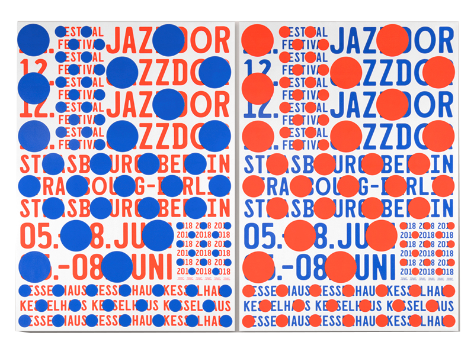
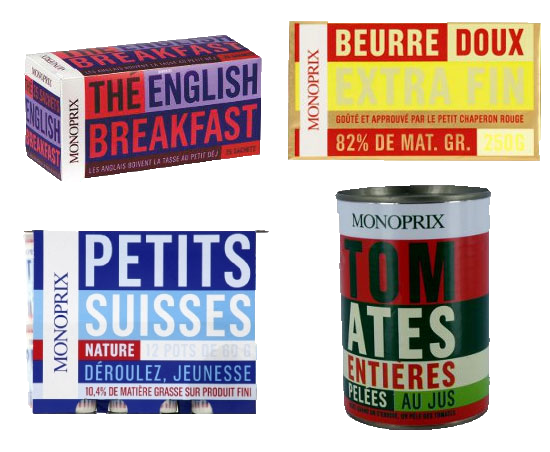

Qu’il soit collectionneur ou non le graphiste crée des formes de collection. Et la collection prend ainsi plusieurs formes au sein
du graphisme. Au travers de réalisations où les liens sont les plus forts entre productions graphiques et collection.
En effet, le graphisme utilise l’effet
de collection pour produire des ensembles de supports rattachés à un même sujet.
À travers des supports en série C’est le cas du studio Helmo qui a produit une série
de 8 affiches pour le festival jazzdor
de Berlin HELMO,
[A]Jazzdor,Série de 8 affiches combinatoires pour la 12e édition de Jazzdor,festival de jazz à Berlin, 2018,

Le fond est reproduit sur les 8 affiches
et les variations sont créées à partir
de formes et couleurs qui diffèrent
d’une affiche à l’autre. La cohérence
va insuffler la collection. L’identité visuelle suit ce principe et se compose
de différents éléments réunis ensemble, elle crée une collection d’images harmonieuses malgré la différence
de format, d’usage, de matériau.
Dans le packaging alimentaire [B]Monoprix, Cleo Charuet
 on ne parle pas de série mais plutôt de gamme, ainsi comme une identité visuelle
les différents produits sont liés
la gamme doit montrer l’appartenance à un même groupe de produits,
à une même marque. Les systèmes
de séries et de gammes en graphisme sont donc plus proches du marketing que de la collection car ils servent
un but commercial. Néanmoins, il serait réducteur de les percevoir seulement comme des techniques de vente.
image superposée.
Une idée de collection de formes graphiques
est également perceptible du côté
de la photographie, avec le travail
des artistes allemands Hilla et Bernd Becher qui consiste à inventorier de façon neutre et frontale des bâtiments industriels abandonnés. Ces photographies sont assemblées selon leur forme plutôt que leur provenance ou leur âge. Une fois encore, il est question d’ensemble,
d’une cohérence et la qualité artistique de ces séries entre objectivité de ce qui est donné à voir et subjectivité du regard des photographes révèle le caractère affectif de la collection.
I.II La collection graphique publique
Depuis quelques année le design graphique tente d’entrer dans les collections
des diverses institutions culturelles (centres d’art, musée, FRAC....). Quelques musées nationaux font timidement entrer des artefacts de design graphique dans leurs collections. Le musée
des arts décoratifs de Paris possède par exemple 1049 pièces dans sa collection
de design graphique sur les 82307 pièces de l’ensemble de sa collection2, les FRACS eux possèdent 849 pièces de design graphique par rapport aux 31905 pièces
de la collection nationale3. Même si l’intérêt pour le design graphique est croissant
son acquisition dans les collections
est relativement faible. À l’exception
de la collection publique du centre international du graphisme de Chaumont qui possède aujourd’hui prés de 45000 affiches.
En parallèle le Cnap s’est engagé
dans la constitution d’une collection
de design graphique depuis 2010.
La collection privée peut aussi influencer la collection en milieu institutionnel. Comme par exemple le legs
de Vincent Perrotet au Centre Pompidou ; ainsi il contribue à la reconnaissance
du graphisme par un public plus large grâce à l’envergure et la renommée
de la structure.
« II »
« bibliographie »